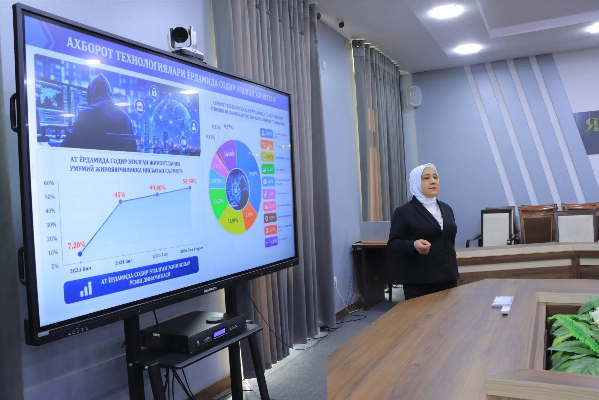

Piskent tuman 1-son texnikumi · UKM.3. Kompyuter tizimlari
Kompyuter
tizimlari
Interaktiv elektron darslik: qisqa bayon, 3D ko‘rgazmalar, testlar va mustaqil ta’lim.
35mavzu
14nazariy
21amaliy
175test savoli
95akademik soat
Taqdim etadi
Oydin Tashtemirova
Maxsus fan o‘qituvchisi
Darslik bo‘limlari
Ma’ruza, taqdimot, video, materiallar va nazorat
Darslik tarkibi
Mavzular 6 ta bo‘limga ajratilgan